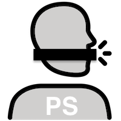

Pseudonymize Speech
A Praat script to pseudonymize speech. That is, Pseudonymize Speech tries to make it difficult to recognize a speaker while still retaining relevant (para-)linguistic features and intelligibility. There is a trade-off between the level of pseudonymization and the (para-)linguistic features retained.
- Manual
- How to use the script.
- An example listening experiments
- Parallel readings of Treasure Island from:
Ribeiro, Manuel Sam. (2018). Parallel Audiobook Corpus, [dataset]. University of Edinburgh. School of Informatics. https://doi.org/10.7488/ds/2468
- Pseudonymize Speech on Github